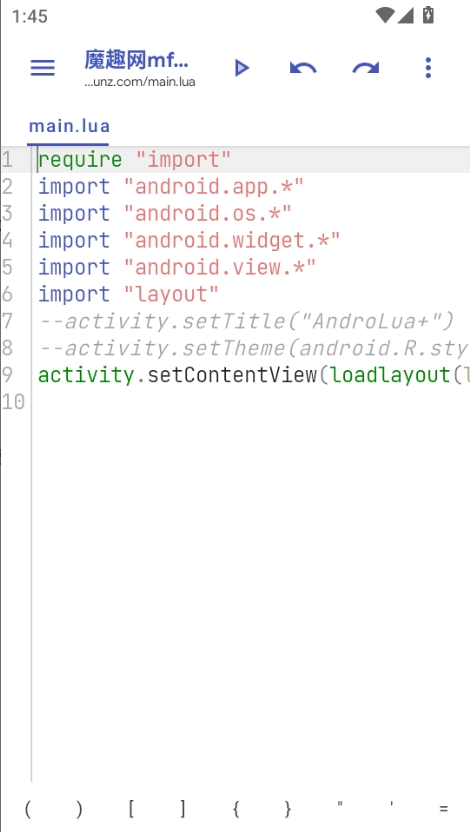
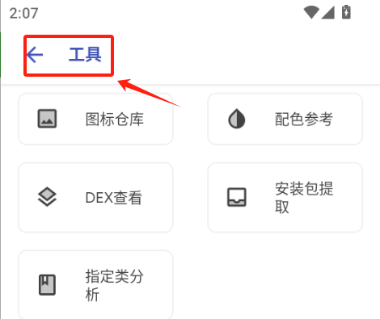

我是怎么用一套手机端工具从需求到 APK 全走完小工具开发的
以前给家人和同事做安卓小工具，找现成安装包要么功能不对要么来路可疑，自己上 Android Studio 又太折腾。这套工具链让我在手机上从写代码到打包安装一条龙完成，整条流程跑通后我把它固定成了自己的轻量交付流水线。
旧流程：给人做小工具每次都在绕路
我每月会被家人或同事找好几次，需求都不大但很具体：帮我妈做个买菜清单、仓库盘点想有个扫码登记、同事要个排班倒计时……以前这些活我有两种选择，但都不舒坦。
第一种是去各大应用商店搜关键词。搜"清单"出来一堆，看评论筛选、装了卸、卸了再装，偶尔能碰到一个勉强能改的，但大部分时候功能总差点意思。而且第三方来源的安装包总让人心里打鼓，来源与完整性都没有保证——装上用两天没问题还好，真出点事找不到人。
第二种是自己动手，拿电脑开 Android Studio 从零搭。Java/Kotlin 写界面要碰 XML 布局、Gradle 构建慢、连真机调试还要开 USB 调试……一个功能简单的小玩意，环境准备加上代码来回试，一整天就没了。我不是专业开发，为了一个几十行逻辑的小工具折腾 IDE 构建链，性价比实在不高。
后来我才知道还有第三条路：在手机上直接完成整个开发流程——用 Lua 语言写、不用碰 XML、几秒钟打出能装的 APK 安装包。这套方案的来龙去脉社区里沿用多年了，叫 AndroLua+，这个应用是它的现代壳，界面更顺手。它的官网上能看到完整的项目介绍，核心能力有三条：调用绝大部分安卓 API、用布局表写界面不用碰 XML、把工程直接打包成 APK 装在手机上就是独立应用。想自己试试的话，Shield安装包从官方下载拿，装上之后整条流程就在手机上跑。
新流程：五步从 ALP 到交付 APK
整条链我现在基本固定了。拿到需求不写代码先，第一步是去市场找现成的工程当起点。
市场里按类型归档了在线文件，数量最大的一类叫 ALP——AndroLua+ 工程文件，3215 个。它是把 main.lua、layout.aly、init.lua 一整套工程打包成单文件的形态，拿到手在编辑器里打开就是完整工程。不用白手起家，搜关键词比如"清单""计时""登记"，总能找到一个结构接近的，改改就有基础。

第二步进编辑器改。界面用布局表写，不是 XML——一张表描述控件、位置、尺寸，想改按钮文字直接改那一行字符串就行。主逻辑在 main.lua 里写，Lua 语言调安卓 API 的桥社区已经搭好了，本地存储、通知、传感器这些直接调用现成模块，不用自己写桥接层。
第三步是那个叫 init.lua 的三行文件。它管应用名、版本号、包名——打包规则就一句话：目录下放了 init.lua 且三行齐全，整个目录的 lua 文件一起打包，main.lua 当入口；没有就只打包当前文件。这个规则省了我至少半小时的构建配置时间，不用 Gradle，不用改配置文件，三个字符串写对就行。摸不准打包入口藏在哪个菜单的，去Shield文档翻一眼就清楚。
第四步打包。找到打包入口点一下，几秒后 APK 就落在工程目录附近。打包用的是 debug 签名——自己装机完全够用，调试签名对系统来说就是"这是个完整的应用包"。装自己手机跑一遍，桌面点开、走完整条流程逻辑、界面没变形，这一版就算过了。
第五步备份和分发。这里有个好用的细节：工具箱里有"安装包提取"功能，能把手机上已装的应用反向导出成 APK。我用它把自己手机上跑通的版本再提一份出来，存网盘做异地备份——万一哪天手机恢复出厂设置了，不用重新从头搭。分发就直接微信传 APK 给用的人，对方装上就是完整应用。

流程里最容易断的两个环节
整条链跑下来最容易卡住的地方我遇到过两次，现在有经验了。
第一个是 init.lua 写得不规范导致打包失败。三行的结构是固定的，少一行或多了个不可见字符，打包器会默默跳过。后来我每次打包前都手动打开 init.lua 扫一眼三行是不是齐全，或者直接把一个标准 init.lua 当模板存网盘，每次拉下来改字符串值就行。
第二个是布局表改乱了导致界面打不开。布局表是缩进敏感的，某个子控件缩进错一级，界面渲染就直接崩。我现在改布局表只做两类操作：要么在现有控件里改文字属性，要么复制一整行改——绝不自己凭空写新的缩进层级。真要加新控件，就从市场里找一个结构相近的 ALP，把那段布局表原样搬过来再改。
效果算账：省了多少事
这条流程帮我省的不是"几小时"这种模糊的话，而是具体的环节数。
旧流程里最耗时的是环境准备和白手起手写界面。Android Studio 装一次环境半小时起步，XML 布局从零搭一个带列表和按钮的界面要一两个小时。现在从 ALP 改起，界面改字改位置十五分钟搞定，不用碰任何 XML 标签。
第二个省的是构建和测试。旧流程里改完代码跑一遍要等 Gradle 同步、编译、推送到手机调试，一轮下来五分钟。现在打包几秒出 APK，点安装直接进应用——改完马上看效果，反馈间隔从分钟级降到秒级。
当然这套流程不是万能的。它适合需求明确、功能不复杂的轻量小工具。要是真要做一个几百屏、需要持续迭代、上应用商店分发的正式产品，这套 debug 签名的打包结果就不够用了——正式发布需要发布签名，而且手机端编辑的协作效率远不如电脑端 IDE。
但对于我这种每月被找三四次、每次需求都是"帮个小忙"的场景来说，这套流程把我从"拒绝还是硬扛"的两难里解放出来了。接到需求打开应用，找个 ALP 当起点，改布局改逻辑，打包装自己手机跑一遍，十分钟后就能把 APK 发出去。我把这套工具的文档和示例工程同步到了三个仓库，GitHub是主入口，Gitee和GitCode作为备份，国内网络不好的时候换个地址就能拉。